⭐⭐⭐⭐⭐
"¿Hiciste un tour conmigo? Tu opinión me ayuda a llegar a más viajeros — es el mayor regalo que puedes hacerme."
Dejar reseña en Tripadvisor
Planazos y descuentos
Experiencias imprescindibles en Oporto — con precios especiales
para los que vienen de mi parte.
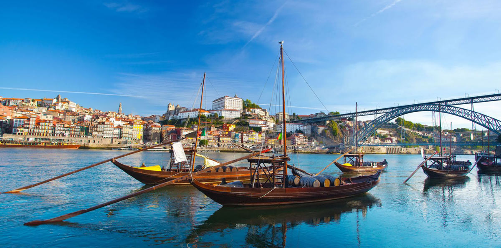
Crucero de los 6 Puentes
Navega por el río Duero y pasa bajo los seis puentes históricos de
Porto. Una de las experiencias más bonitas de la ciudad,
especialmente al atardecer.
18 €
Con el ticket de Fer — descuento de 2 € sobre el precio normal
Cómo reservar: Presenta el ticket en el
embarcadero de Douro Acima en la Ribeira. Sin reserva previa
necesaria.
Fado Presidencial
El espectáculo de fado más auténtico de Porto. Una hora de música
tradicional portuguesa con copa de vino incluida — una experiencia
que no olvidarás.
15 €
+ copa de vino 🍷
Precio especial con voucher de Fer — menciona que vas de su parte
Reservar por WhatsApp →

Sé Catedral do Porto
La segunda catedral más antigua de Portugal, situada en la colina
más alta de la ciudad. Sube la torre sur y maravíllate con las
vistas al Centro Histórico, el Puente Luiz I y el Duero.
4 €
6 € incluyendo el Palácio Episcopal — precios aproximados
Tip de Fer: Ve a primera hora de la mañana para
evitar colas. Las vistas desde la torre son las mejores de todo
Porto.
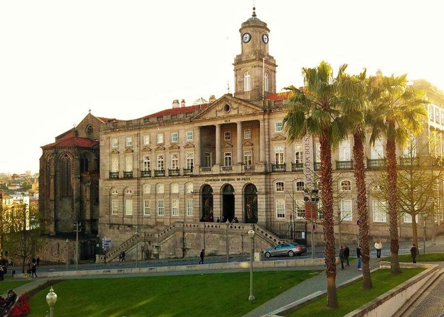
Palácio da Bolsa
El primer edificio de la antigua Cámara de Comercio de Porto. No
te pierdas su impresionante arquitectura neoclásica y el
majestuoso Salón Árabe, una de las salas más espectaculares de
Portugal.
13 €
Incluye visita guiada — precios aproximados
Tip de Fer: El Salón Árabe tardó 18 años en
construirse. La guía explica todos los detalles — merece la pena
escucharla completa.
Tip de Fer: El Crucero + Fado en el mismo día es el
plan perfecto para una tarde-noche en Porto. Crucero a las 16h,
paseo por la Ribeira y Fado a las 19h30. Resérvame el Fado por
WhatsApp con antelación — las sesiones se llenan.
Bodegas de
Vinho do Porto
Vila Nova de Gaia, al otro lado del Duero, alberga las mejores
bodegas del mundo para el Vinho do Porto. Visita guiada,
degustación y vistas incluidas.
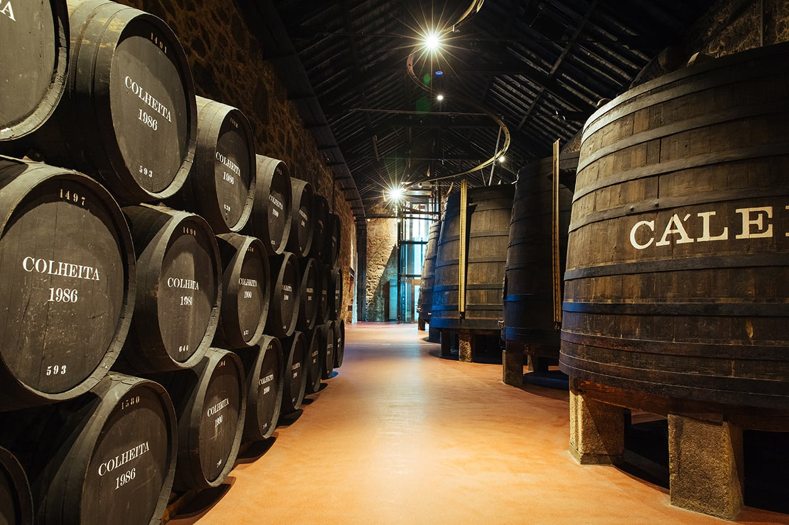
Calem
Una de las bodegas más visitadas de Gaia. Tour completo por las
caves con degustación de 2 vinos y espectáculo de fado incluido
en algunas sesiones.
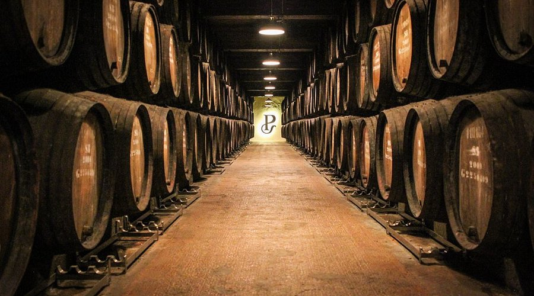
Poças
Bodega familiar fundada en 1918. Ambiente más íntimo y auténtico
que las grandes, con excelentes vinos tawny y colheita. Perfecta
para los amantes del vino de verdad.
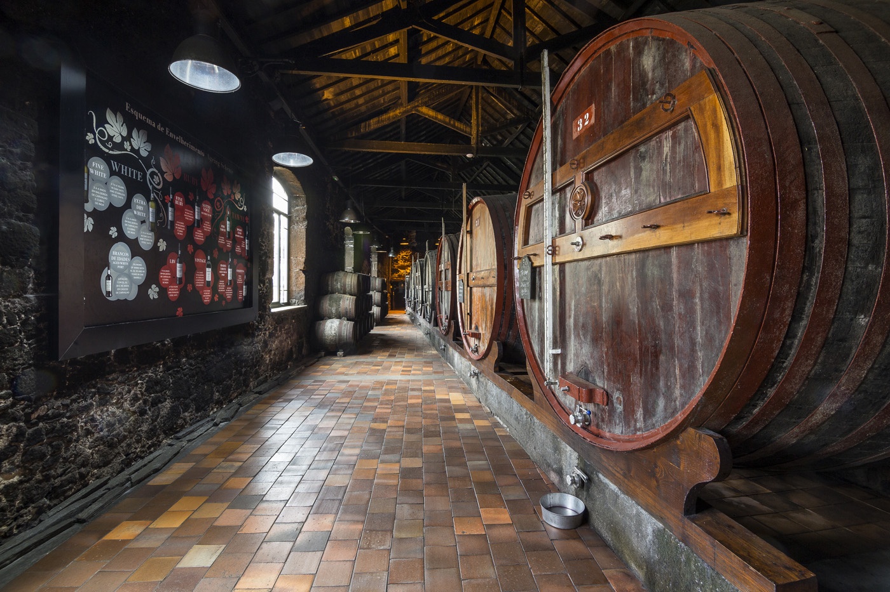
Burmester
Fundada en 1730, es una de las más antiguas de Gaia. Destaca por
sus Vintage y sus Colheita de décadas pasadas. Visita muy
completa con degustación premium.
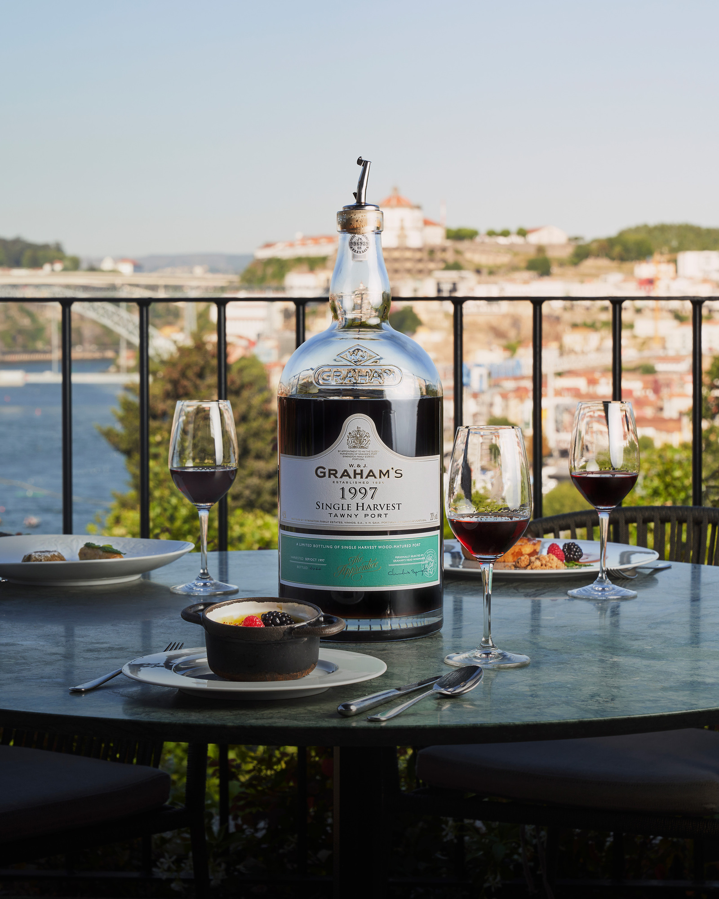
Grahams
Marca británica legendaria con más de 200 años en el Duero. Las
vistas desde sus terrazas son de las mejores de Gaia. El Lodge
restaurant es una joya.
Tip de Fer: Las bodegas están todas en Vila Nova de
Gaia — cruza el Puente Luiz I a pie desde la Ribeira (10 min a pie).
Reserva siempre con antelación, especialmente en verano. Los links
de arriba llevan a Civitatis con mi referencia — gracias por usarlos
🙏
Cervezas, Vinos
& buenos ratos
Porto tiene una escena de bares y cervecerías artesanas que ha
explotado en los últimos años. Aquí mis favoritos.
🍺 Cervecerías artesanas
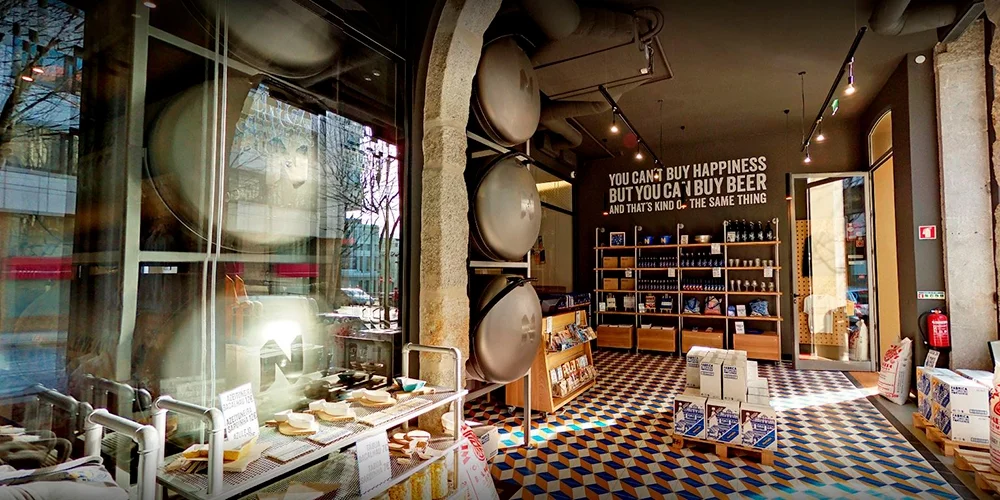
Fábrica Nortada
Cerveza artesana portuense
Favorita de Fer
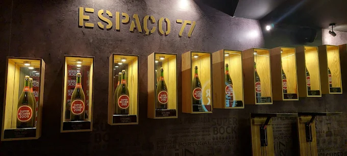
Espaço 77
Porto centro
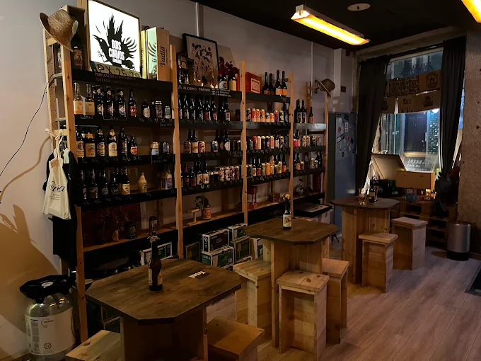
Armazém da Cerveja
Gran selección craft
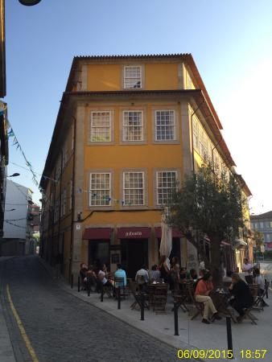
Taberna Aduela
Ambiente tradicional
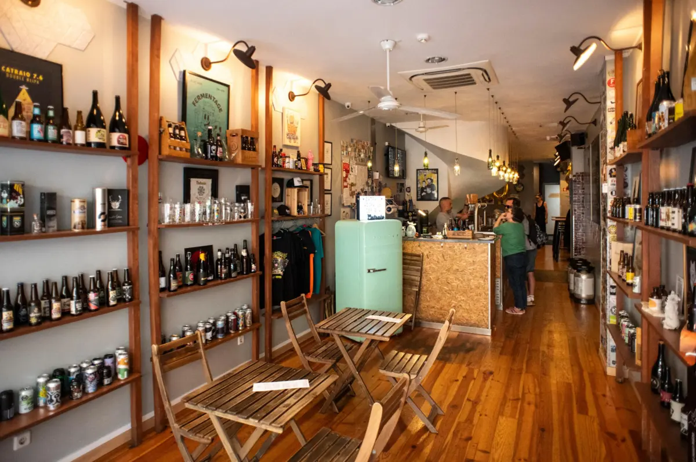
Catraio Craft Beer Shop
200+ referencias
Paraíso cervecero
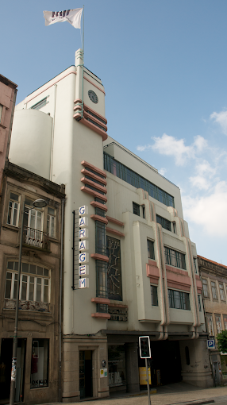
Maus Hábitos
Bar cultural · 4º piso
🍷 Bares de vino
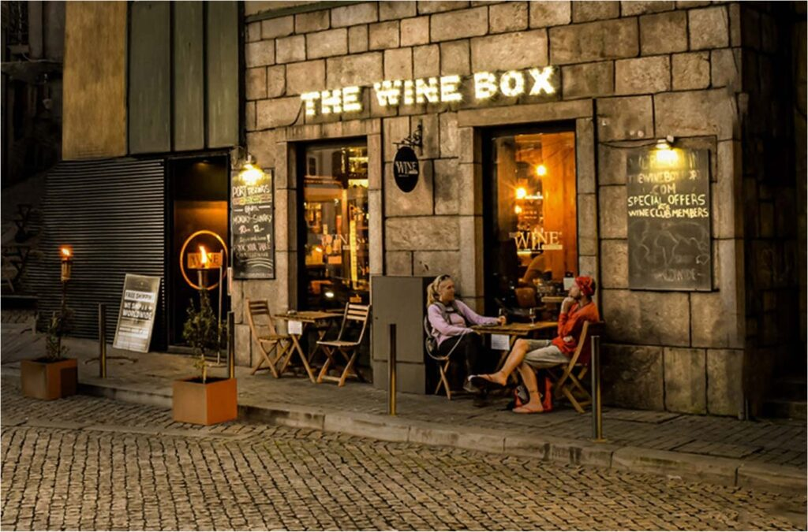
The Wine Box
Viños portugueses
Top pick
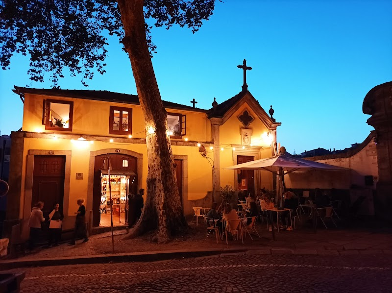
Capela Incomum
Ambiente singular
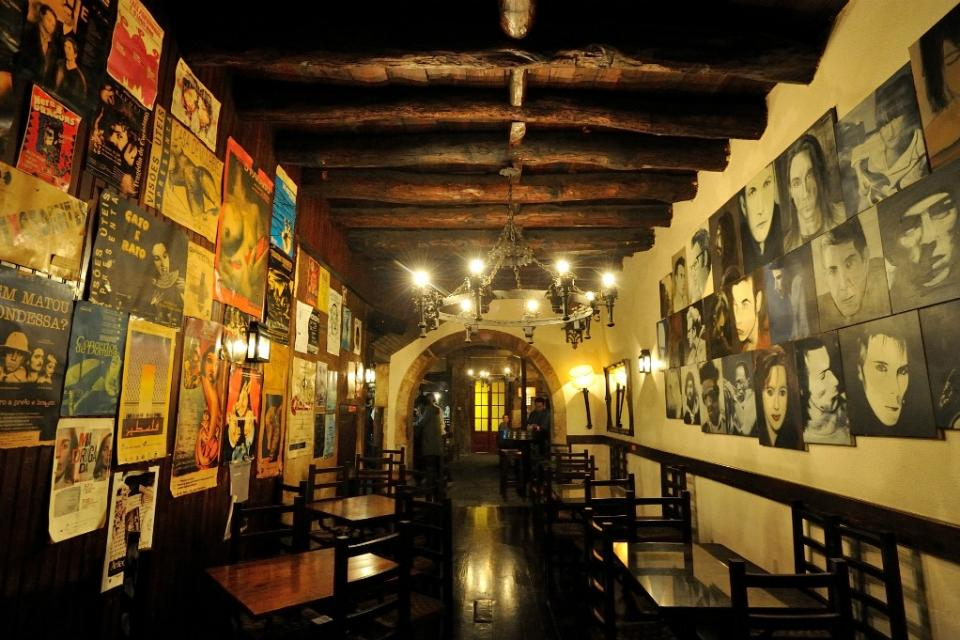
Pipa Velha
Tasca de vinos
Tip de Fer: Fábrica Nortada tiene
jardín exterior enorme — perfecta para tardes de verano.
Maus Hábitos es punto de encuentro de la escena
cultural de Porto: conciertos, exposiciones y buena música.
Catraio te deja probar antes de comprar.
Rooftops
& terrazas con vistas
Porto desde las alturas — los mejores sitios para ver el
atardecer, el Duero y el Centro Histórico con un cóctel en la
mano.
🌇
Terrace Lounge 360° — Espaço Porto Cruz
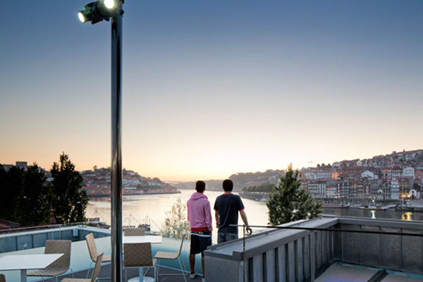
Terraza panorámica con vistas a todo Porto desde Gaia. Una de las
mejores perspectivas del Puente Luiz I y la Ribeira. Cócteles y
Vinho do Porto.
⚽
Guindalense FC
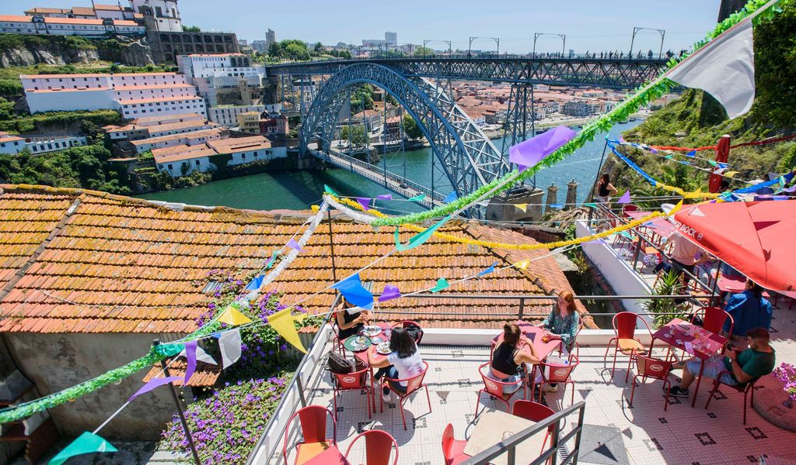
El club de fútbol más pintoresco de Porto, colgado sobre los
Guindais con vistas directas al Duero. Conciertos en vivo y una de
las mejores vistas de la ciudad.
🏛️
WOW — World of Wine
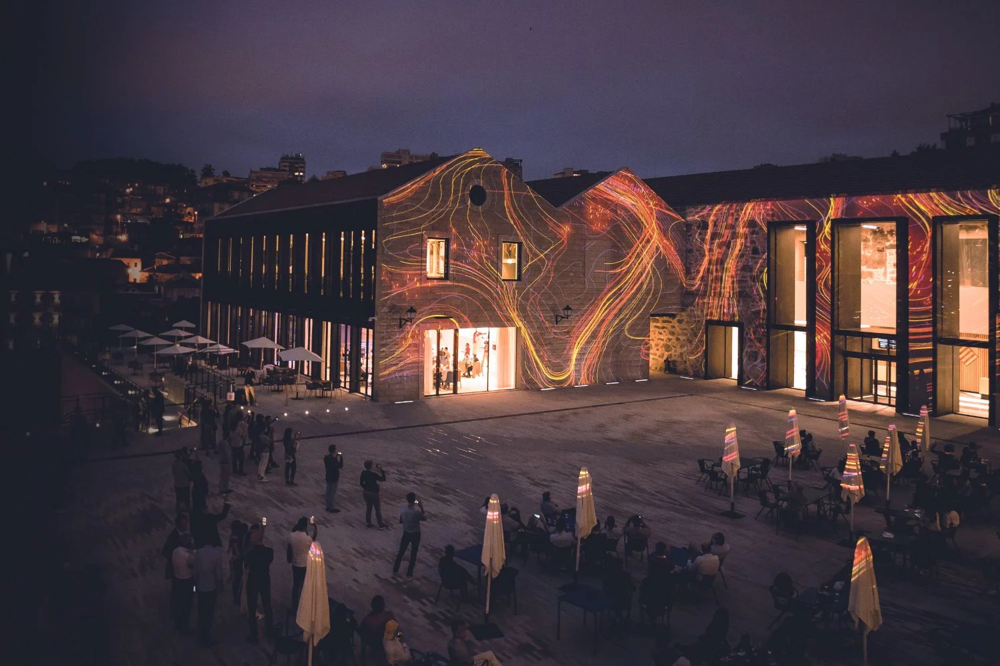
Complejo cultural en Gaia que narra la historia del vino
portugués. Museos, restaurantes, bares y bodegas en un espacio
espectacular con terrazas con vistas.
🍸
Bite Rooftop Gaia
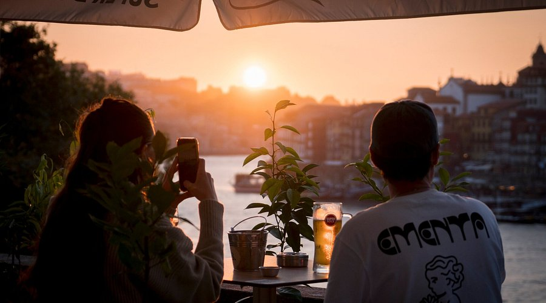
Rooftop contemporáneo en Gaia con barra de cocktails y tapas.
Vistas al skyline de Porto y ambiente desenfadado. Perfecto para
el after-work.
🌹
Rooftop Flores
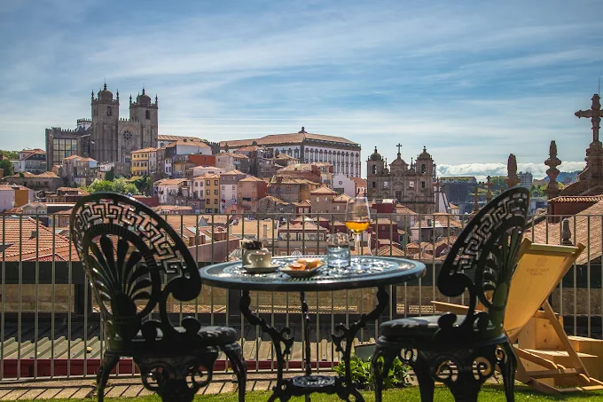
De las mejores vistas hacia el Centro Histórico y la Sé Catedral
de Porto. Tapas y cócteles de autor. Los viernes y sábados con
música en vivo.
Tip de Fer: Para el atardecer, ve al
Espaço Porto Cruz o al
Rooftop Flores — las vistas en la hora dorada son
mágicas. Guindalense es el más auténtico y el menos
turístico — los locales lo adoran. Todos los de Gaia son accesibles
a pie cruzando el puente.
Ir de marcha ·
la noche portuense
Porto tiene una vida nocturna increíble concentrada en zonas muy
caminables. Aquí el mapa de la noche que solo conocen los locales.
La más animada
Galeria de Paris & alrededores
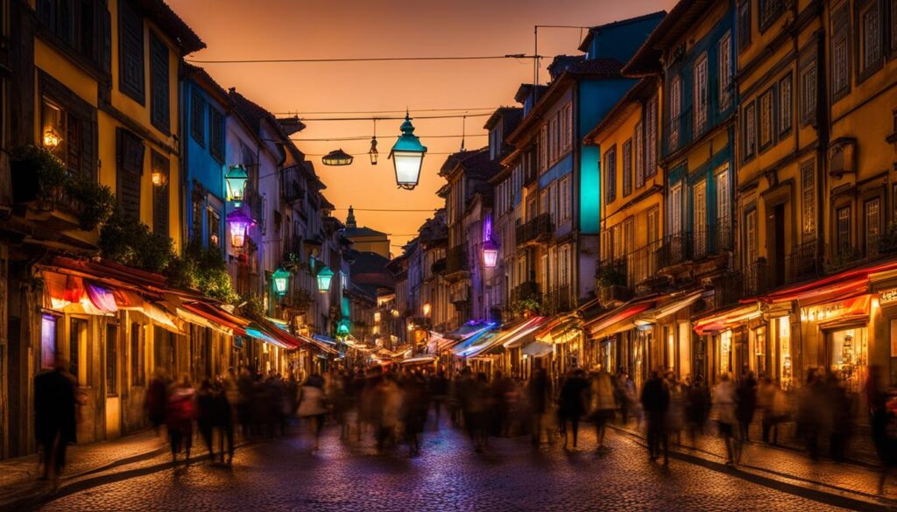
Rua Galeria de Paris
Rua Cândido dos Reis
Praça Carlos Alberto
Rua das Oliveiras
Travessa de Cedofeita
Rua Cândido dos Reis
Praça Carlos Alberto
Rua das Oliveiras
Travessa de Cedofeita
Más tranquila
Praça Filipa de Lencastre
Praça Filipa de Lencastre
Rua da Picaria
Rua do Almada
Rua da Conceição
Rua Dr. Ricardo Jorge
Rua da Picaria
Rua do Almada
Rua da Conceição
Rua Dr. Ricardo Jorge
Alternativa & local
Rua de Passos Manuel
Rua de Passos Manuel
Praça dos Poveiros
Zona más frecuentada por los portuenses — menos turistas, más ambiente local
Praça dos Poveiros
Zona más frecuentada por los portuenses — menos turistas, más ambiente local
Tip de Fer: La noche en Porto empieza tarde — los
bares se animan a partir de las 23h y los clubs desde la 1h.
Galeria de Paris es la calle más icónica: bares en
fila, música en la calle, gente de todo el mundo. Para algo más
local ve a Passos Manuel — es donde van los
estudiantes de la universidad.
Top 10 Gratis ·
Actividades gratuitas en Porto
Descubre las mejores actividades gratuitas para disfrutar de Oporto sin gastar dinero.
Desde miradores panorámicos y barrios históricos hasta jardines, mercados y rincones auténticos,
esta selección reúne experiencias imprescindibles para conocer la ciudad de forma económica y local.
Puente Luiz I
Cruzar el Puente de Luis I por la parte de arriba y disfrutar de las vistas.
Recomiendo ver el atardecer desde el mirador de Jardim do Morro (Vila Nova de Gaia).
Recomiendo ver el atardecer desde el mirador de Jardim do Morro (Vila Nova de Gaia).
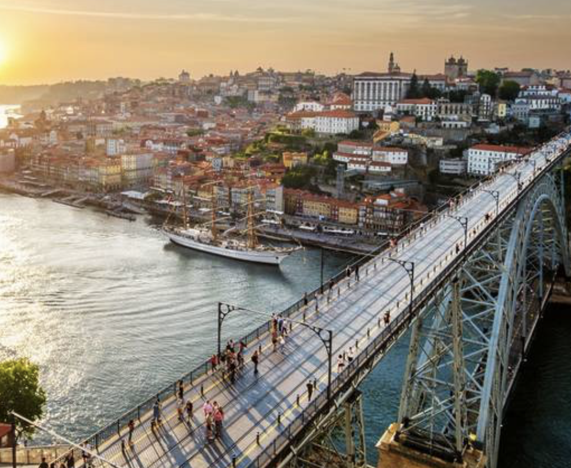
Jardines del Palacio de Cristal
Dar un paseo por los jardines del Palacio de Cristal.
Aquí dentro está el Museo Romántico, gratuito los fines de semana.
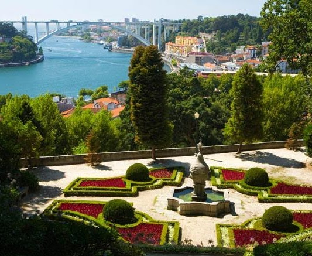
Miradouro Monasterio Serra do Pilar
Las vistas más altas hacia la ciudad de Porto. No te las puedes perder!
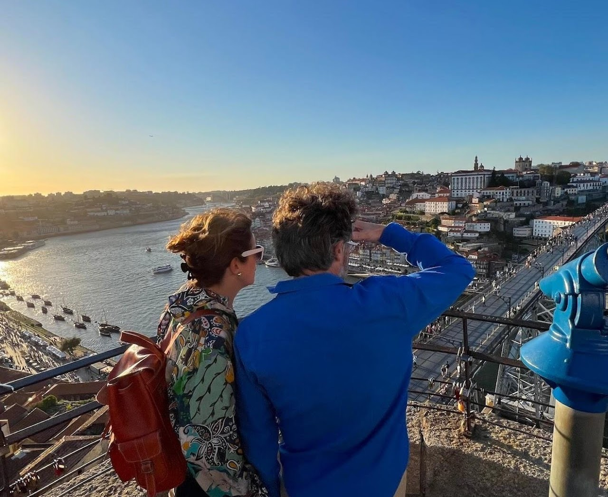
Capela das Almas
La visita por dentro es gratuita. Famosa por sus azulejos azules.
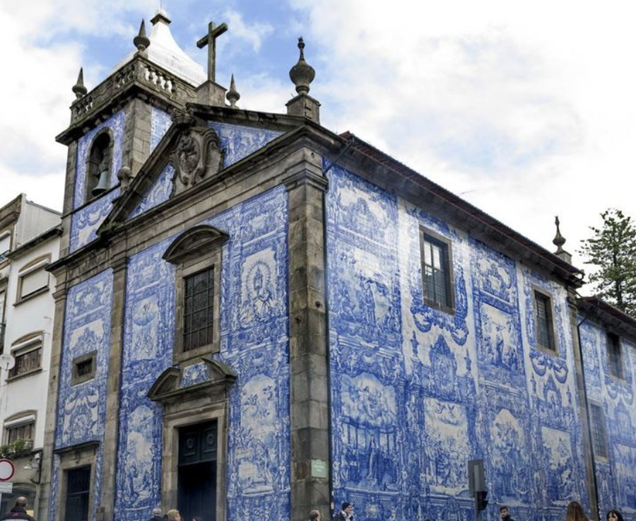
Parque da Cidade
Hacer una caminada por el Parque más importante de la ciudad.
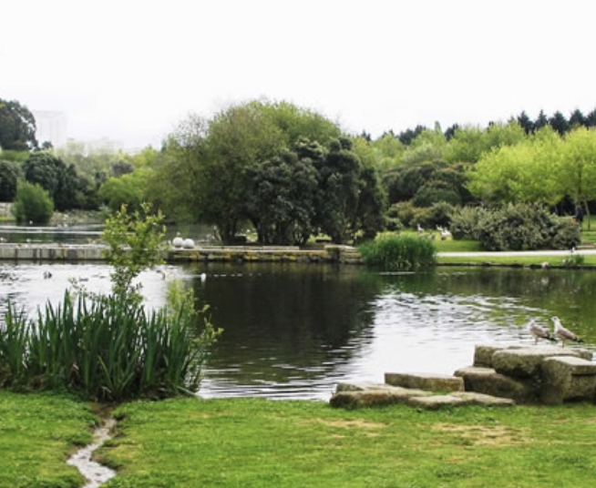
Instituto do Vinho do Porto
Exposição sobre os vinhos do Porto e o Douro num edifício histórico.
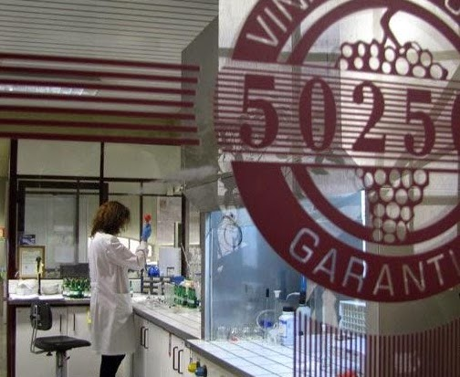
Tip de Fer: No Porto, o pôr do sol é obrigatório. No Jardim do Morro há sempre música ao vivo e um ambiente fantástico de borla.
Compras & Souvenirs·
Descubre las mejores actividades gratuitas para disfrutar de Oporto sin gastar dinero.
Desde miradores panorámicos y barrios históricos hasta jardines, mercados y rincones auténticos,
esta selección reúne experiencias imprescindibles para conocer la ciudad de forma económica y local.
Prometeu Artesanato
Prometeu Artesanato, São João: Ubicada en Rua de São João, 19, en el centro histórico.
Prometeu Artesanato, Alfândega: Situada en Rua da Alfândega, 7, también en el centro histórico.
Prometeu Artesanato, Alexandre Herculano: Se encuentra en Rua Alexandre Herculano, 355, en la zona de Baixa.
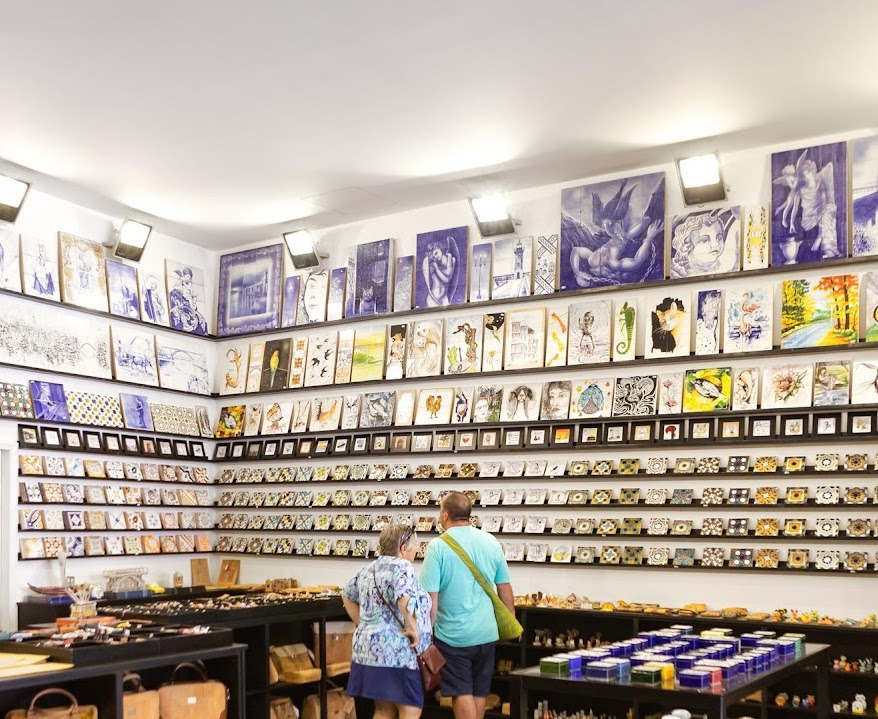
Zinda Atelier
Agradable tienda independiente de artículos de cerámica de calidad elaborados por varios artistas.
Dirección: R. de Ferreira Borges 63, 4050-253 Porto
Teléfono: 936 075 549
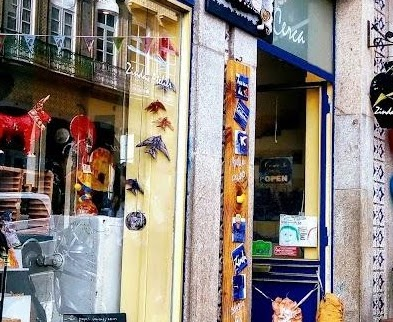
Garrafeira do Carmo
Para comprar vinos:
Gran selección de vinos portugueses de diversas regiones,
con opciones tanto premium como económicas.
Es conocida por sus precios competitivos y excelente servicio al cliente.
Dirección: R. do Carmo 17, 4050-064 Porto
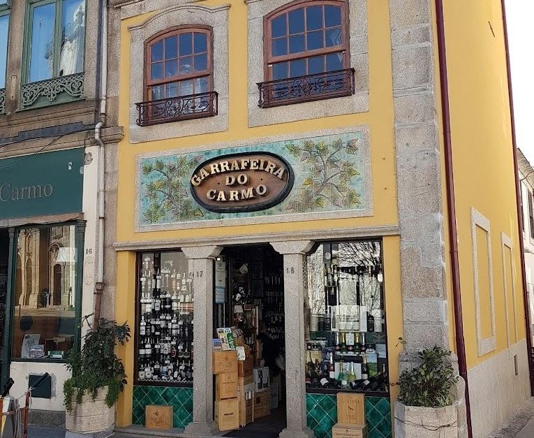
Garrafeira Nacional
Esta tienda ofrece una gran selección de vinos portugueses y de todo el mundo. A pesar de tener algunas marcas más exclusivas, también tiene muchas opciones asequibles para aquellos que buscan precios bajos sin comprometer la calidad. Dirección: R. das Flores 60, 4050-265 Porto
Tip de Fer:
Te dejo algunas recomendaciones que puedes encontrar en supermercados
(precios referenciales):
Vinos de Oporto:
Vinos de Oporto:
- Quinta do Vallado, Old Tawny, 19,99€
- Quinta do Vallado, Tawny Reserva, 15,95€
- Quinta do Vallado, Porto Blanco, 12,90€ (para hacer Port Tonic)
- Ferreira, Tawny, 13,90€
- Burmester, Tawny, 6,50€
- Quinta de Santiago Alvarinho Branco, 13,95€
- Quinta D’Amares Alvarinho, 8,85€
- Aveleda Loureiro Branco, 4,90€
- Esporão Bico Amarelo, 4,50€
- Quinta da Aveleda, 4,25€
- Ponte de Lima Adamado Branco, 3,50€
- João Clara Rosé, 11,49€
- Seeweed Rosé Wine, 2,30€
- Dona Vitória, Alentejo Tinto, 19,99€
- Heredade dos Grous, Alentejo Blanco, 15,99€
- Heredade dos Grous, Alentejo Reserva Blanco, 15,05€
- Tiago Cabaço Vinhas Velhas, Alentejo Blanco, 12,95€
- Heredade do Peso Trinca Bolotas, Alentejo Tinto, 7,35€
¿Quieres vivirlo en persona?
Organizo rutas nocturnas personalizadas, reservo el Fado con descuento y te acompaño a las bodegas. Escríbeme y lo preparamos todo.